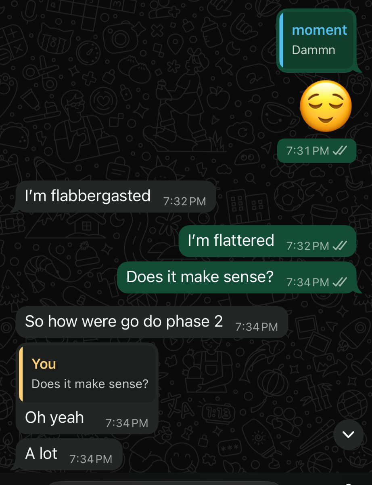

Upcarva observes how you actually eat — not how you think you eat.
Over 14 days you log your meals, and we build a full picture of your real habits,
your triggers, your blind spots. Then we show you exactly what to change and why.
No generic meal plans. No calorie obsession. Precision built around you.
02Real reaction · unfiltered
"Oh yeah. A lot."
Kwaw got his Phase 1 report on a Sunday evening. These were his next four messages.

Kwaw, 30 · reacting to his Phase 1 report in real time.
"Other apps give you generic results… but this process — this actually understands me."
We didn't translate this. It's in Twi mixed with English, exactly as sent.
The feeling comes through regardless. Press play.
03How it works
Three phases. One direction.
1
Know your habits — 14 days
Log what you eat, when, and why. No judgment. You get a full personal report — body composition estimate, macro analysis, behaviour patterns, and exactly what to fix first.
2
Fix the patterns
Three personalised experiments based on your data. You try them, keep logging, and we find what actually fits your life. No meal plan you'll abandon in a week.
3
Make it permanent
Once your habits are stable, we introduce precision — calories, macros, gym programming. By this point it doesn't feel like a diet. It feels like you.
04Why it's different
📊
Built from your actual data
Not a template. Every observation and recommendation is drawn from what you specifically logged over 14 days.
🇬🇭
Built for how we actually eat
Waakye. Jollof. Banku. Fufu. Tom brown. We know Ghanaian food and build plans around it — not chicken breast and broccoli.
🧠
Behaviour-first, not calorie-first
Calorie counting fails most people because it treats symptoms, not causes. We find the habits driving the problem.
🎯
80% is enough
You don't need to be perfect. You need to be consistent. The system is designed around sustainable change — not punishment when you slip.
Ready to see your habits clearly?
Cohort 2 is loading. Limited to 10 people. GHS 200 gets you into Phase 1 — your full personal report.